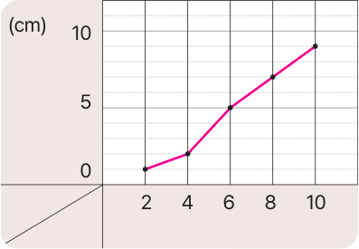

이전에
배웠어요
『수학 4-2』 꺾은선그래프의 내용 알아보기
[2~3]
식물의 키를 2일마다 조사하여 나타낸 꺾은선 그래프입니다. 물음에 답해 보세요.
12일의 식물의 키는 몇 ㎝일지 예상해 보세요.
날짜별 식물의 키

키
날짜
(일)
11
㎝
해설
식물의 키가 계속 자라고 있으므로 10일의 키인 9 cm보다 클 것으로 예상할 수 있습니다.
입력타입토글
리셋
제출